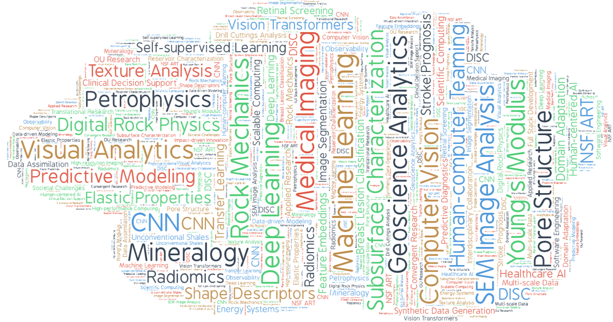
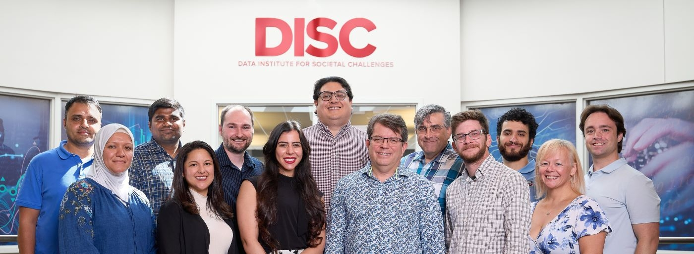
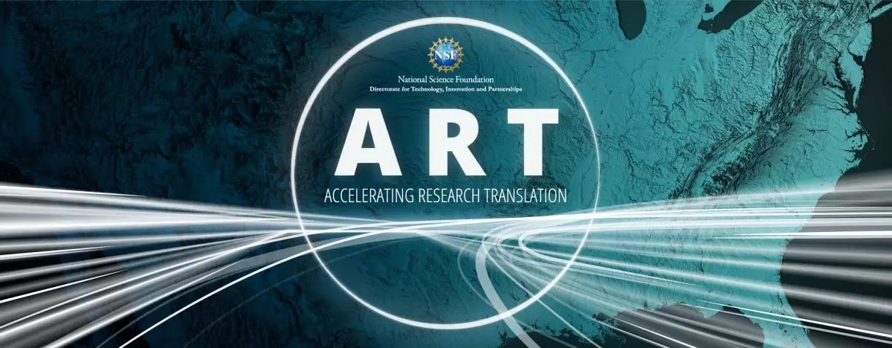
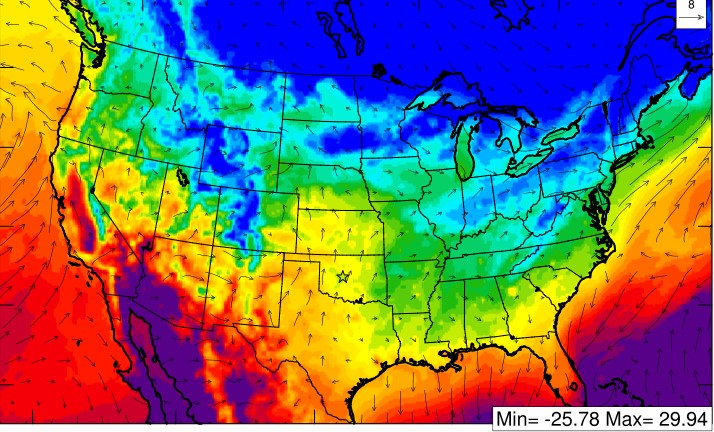

Sai Kiran Maryada
Sai Kiran Maryada
Research Scientist, NSF ART Project
Data Institute for Societal Challenges (DISC)
Gallogly College of Engineering
University of Oklahoma
Telephone: 405-325-4158
Email: sai.maryada@ou.edu
Dr. Sai Kiran Maryada is a Research Scientist at the Data Institute for Societal Challenges (DISC) at the University of Oklahoma, where his research spans two primary verticals: healthcare and energy. In healthcare, he develops machine learning models and visual analytics systems to support clinical decision-making and medical imaging workflows. In the energy domain, he works on data-driven characterization of subsurface materials and predictive modeling for geoscience analysis.
Dr. Maryada received his Ph.D. in Computer Science and M.S. in Data Science and Analytics from the University of Oklahoma. His doctoral research introduced novel deep learning and multi-stage image analysis algorithms for applications in retinal screening, breast lesion classification, ischemic stroke prognosis, and computer-aided detection. His work demonstrated measurable improvements in predictive accuracy and interpretability, contributing to real clinical research studies and translational tools. He is a recipient of the 2022 OU College of Engineering Dissertation Excellence Award.
Dr. Maryada has contributed to NSF and NIH-funded research initiatives and has published in leading venues including SPIE Medical Imaging, IEEE Transactions on Biomedical Engineering, and the Journal of Geoenergy Science and Engineering. His research spans computer vision, predictive modeling, explainable AI, human-computer teaming, and large-scale data pipelines, with a focus on creating real-world, human-centered impact.
Research Focus Areas
Healthcare AI
- Clinical decision support & workflow optimization
- Medical image segmentation & diagnosis (CT, MRI, retinal, mammography)
- Explainable & trustworthy AI for diagnostic interpretation
- Risk prediction & patient outcome modeling
- Human-centered visual analytics for clinicians
Energy & Subsurface Analytics
- Subsurface characterization & reservoir property estimation
- Imaging-based rock mechanics & mineralogical feature extraction
- Petrographic & SEM-based segmentation/classification
- ML workflows for geological & geoscience data interpretation
- Predictive modeling of multi-phase physical systems
Interests
Machine Learning
Software Engineering
Visual Analytics
Deep Learning
Data Science
Education
PhD in Computer Science,
The University of OklahomaMS in Data Science and Analytics,
The University of OklahomaBS in Mechanical Engineering,
Jawaharlal Nehru Technological University

What’s New
Recent publications and conference contributions. Click any title to view abstract.
Deep Learning-Based Estimation of Petrophysical Properties for Unconventional Shales from SEM Images
Authors: L. Livingstone, P. Yeturi, I. Cherukuri, D. Devegowda, M. Curtis, C. Rai, SK Maryada
Abstract: We present a deep learning-based workflow to rapidly estimate petrophysical properties in unconventional shales directly from SEM images. Using a dataset of over 8,000 images from 22 shale plays across North and South America and Europe, we first train a ResNet50-based CNN classifier to distinguish microstructural differences between plays. The learned deep-learning feature representations are then related to petrophysical properties such as porosity, mineralogy, and elastic properties.
This approach avoids traditional image segmentation workflows, which can take weeks per image due to the complexity of shale microstructure. By extracting feature embeddings from the trained CNN, we enable fast, scalable, and cost-effective estimation of petrophysical properties—especially useful in settings where core preservation is challenging and only drill cuttings or small rock fragments are available. The results demonstrate strong classification performance and high predictive capability, while also revealing digital geologic analog relationships between similar plays.
An Improved Data-Driven Method for the Prediction of Elastic Properties in Unconventional Shales from SEM Images Q1
Authors: S.K. Maryada, D. Devegowda, C. Rai, M. Curtis, D. Ebert, G. Danala
Abstract: We present a fast, image-based workflow to estimate Young’s modulus from SEM images of drill cuttings collected from 14 unconventional shale plays across North and South America. Instead of relying on extensive laboratory testing or interpretive well logs, we extract both textural features (e.g., entropy, contrast, homogeneity, and energy) and shape-based attributes (e.g., circularity, aspect ratio, solidity, and eccentricity) to characterize the mineralogical and pore structure within the samples.
This information is combined with deep learning-derived feature representations and correlated with empirically measured elastic properties using non-parametric regression. The resulting models show strong predictive capability across diverse geological settings and remain reliable even for previously unseen SEM images. Incorporating both texture and shape metrics allows the approach to capture mineralogical variability and pore geometry effects that strongly influence mechanical behavior.
Overall, this method provides a rapid, less subjective, and computationally efficient tool for preliminary rock mechanics assessment—advancing the use of image-based analytics for data-driven exploration and reservoir evaluation workflows.
Self-Supervised Learning Using Vision Transformer Architecture for Rock Image Segmentation
Authors: R.D. Mohammad, D. Devegowda, C. Rai, M. Curtis, S. Mudduluru, SK. Maryada
Abstract: We present a self-supervised semantic segmentation workflow for SEM images of shale, designed to eliminate the need for extensive manually annotated training datasets. Traditional semantic segmentation approaches require pixel-level labels to differentiate organic matter, inorganic minerals, and pore structures — a process that is both time-consuming and costly. In contrast, our method leverages a Vision Transformer-based self-supervised architecture to learn pixel-level representations directly from the image data.
Our dataset consists of FIB-SEM images from 22 shale plays across North and South America. We apply carefully designed image augmentations, including random cropping and contrast adjustments, to ensure the model captures both global and localized microstructural variations. The trained model segments each image into 12 sub-classes, which we subsequently group into the primary classes of organic material, inorganic material, and pore space. This approach allows the algorithm to capture subtle grayscale and textural differences within each class, resulting in improved microstructural interpretation.
The method performs robustly across a wide range of samples, enabling large-scale geological and petrophysical analyses without manual labeling. While reduced segmentation quality occurs in approximately 5% of images, the approach significantly accelerates shale characterization and reduces subjectivity and processing time. This work illustrates the value of self-supervised segmentation as a scalable and efficient tool for subsurface rock analysis.


